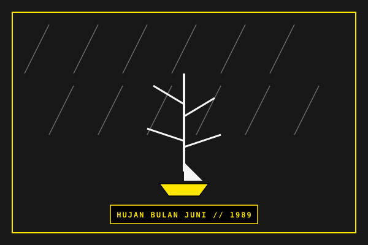

01. INDONESIAN LYRIC
1940—2020

SAPARDI DJOKO DAMONO
MASTERWORK: HUJAN BULAN JUNI (1994)
The maestro of quiet Indonesian lyricism. Transforming rain, boats, and fallen leaves into timeless meditations on patience and unspoken love.
CANON: PUISI LIRIK
DISCOVER →